Your letter is the best start to my financial education I have been able to find. And my IRA has finally started to gain some momentum.”
Grant | San DiegoROBERT KIYOSAKI
The man who runs the United States Treasury said three quiet things that could decide your family’s financial future for a generation…
Maybe two generations.
With this new system, you will be on one of two sides.
One side supplies the money.
The other side gets paid from it.
Most Americans are being pushed onto the wrong side without even realizing it.
But it doesn’t have to be that way.
Because you can actually pick the side you’re on.
Here are the three lines that gave it away.
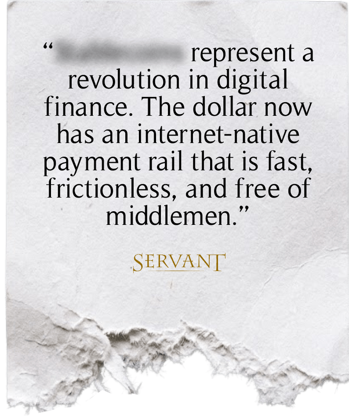
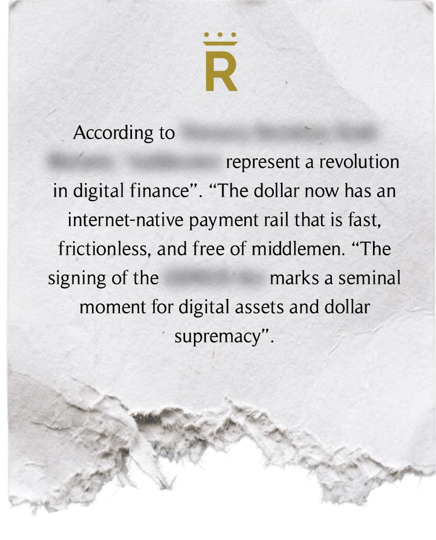
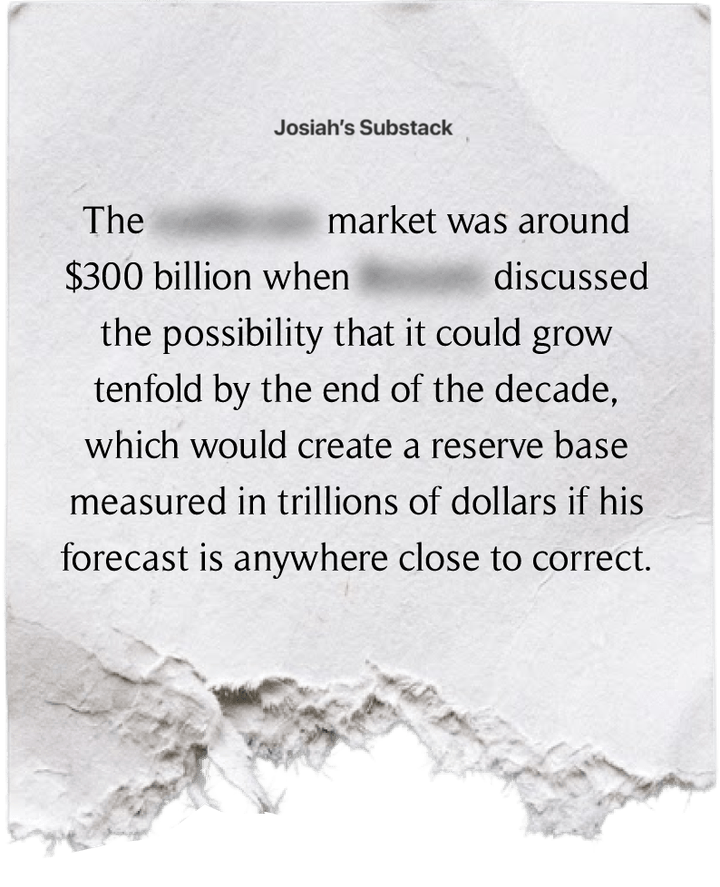
He’s not wrong.
That’s the problem.
And it’s also where one of the biggest financial opportunities of the decade begins.
A tenfold expansion means trillions of dollars rushing through new financial machinery most investors aren’t even watching.
Most investors are staring at the new digital dollars.
I’m watching the businesses paid to run the machinery.
Garrett has identified three public companies he believes are positioned to get paid as this system grows.
They sit in three different parts of the machinery.
One already handles an enormous amount of money moving through the system.
Another sits in the middle of the government bond market, where all those Treasury IOUs have to move and settle.
And the third connects two things almost nobody would think belong in the same sentence:
Digital dollars.
And physical gold.
Three different companies, and three different ways to potentially profit from the same financial shift.
And Garrett believes the market is still treating this like a niche story instead of the unprecedented, massive financial buildout it appears to be.
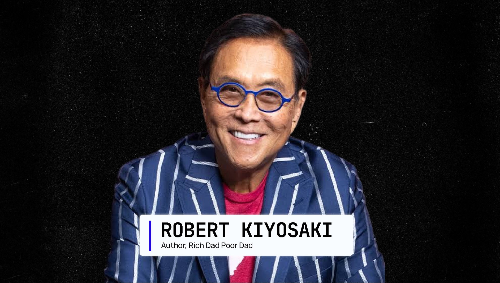
My name is Robert Kiyosaki. A few months ago, Garrett Baldwin and my publisher, Chris Carroll, brought me something I did not like.
A forty-eight-page law most people had ignored.
Garrett dug into what the law actually does.
Chris worked on how to explain it without burying you in legal and banking language.
Here’s what matters to me…
Who controls the money?
Who gets paid?
And what can ordinary Americans do about it?
That is the research you are about to see.
Thirty years ago I wrote a book. In it I said three words that made a lot of people mad.
Savers are losers.
I said it on TV. I said it on stage. I said it to my own family.
People laughed.
Nobody’s laughing now.
Let me tell you why I’m sure of this, because you should know who’s talking.
I’ve written more than two dozen books about money, and about thirty million people own a copy of one of them.
But the two that matter today are the ones nobody quotes at parties.
In 2OO2 I wrote a book called Rich Dad’s Prophecy.
In it I said your retirement account had quietly been turned into a captive pool of savings.
Money the system could count on, because you couldn’t take it out without a penalty.
The experts spent twenty years telling me I was wrong about that.
Then I wrote a book called FAKE. That one was about the money itself. About what happens to a dollar when the people printing it need it to behave a certain way.
I didn’t write either book to be right. I wrote them because I could see the shape of a thing coming, and I’ve spent my whole life learning to read that shape early.
Let me tell you where I learned it.
I grew up with two fathers. My real dad was a schoolteacher, and later the head of education for the whole state of Hawaii.
Brilliant man. PhD.
Worked harder than anybody I knew.
He died with almost nothing.
My best friend’s father never finished the eighth grade. He built businesses instead. I called him my rich dad, and starting when I was nine years old, he taught me things school never did.
Here’s the one that matters today.
My poor dad looked at money and asked, how much does it pay?
My rich dad looked at the same money and asked a different question.
Who else is using it while I hold it?
That’s the whole lesson, and it took me thirty years to understand how big it was.
Because money never sits still. Every dollar you leave somewhere is doing a job for somebody.
The only question is whether that job pays you, or somebody else.
And that’s why this matters to you.
The new system has two sides.
On one side are people whose money keeps it running.
On the other are people who own the companies getting paid to run it.
Before we’re finished, I’ll show you how to get on the side that gets paid.
Last July, Congress passed a law. Forty-eight pages. Almost no one covered it.
And that law does something to your money that I’ve been warning about for three decades.
It doesn’t take it.
It puts it to work. For somebody else.
Let me show you.
Who lends America money?
The answer is in how Washington borrows.
Washington spends more money than it collects in taxes.
So it borrows the rest.
And when Washington borrows money, it sells an IOU.
That is all a Treasury bill, note, or bond is.
An IOU from the United States government.
A buyer gives Washington cash today.
Washington promises to pay the buyer back later, with interest. The buyer is the lender. The national debt is not one giant bill sitting in a drawer.
It is a giant pile of IOUs.
And those IOUs come due at different times.
Every week, old IOUs come due and have to be paid.
At the same time, Washington keeps spending more than it collects.
So it has to sell new IOUs for the new spending.
And it has to sell more IOUs as the old ones come due.
Over and over again.
That means Washington always needs buyers.
People, banks, funds, and countries willing to hand over cash and take an IOU in return.
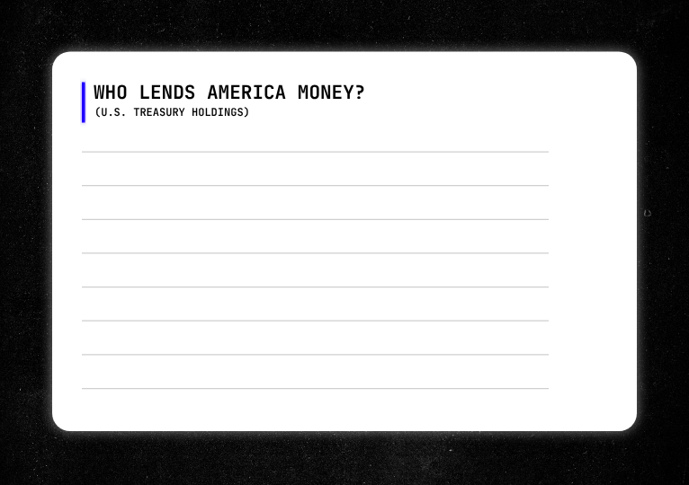
For fifty years, America always knew where the money would come from. China bought. Japan bought. The Fed bought. Now China is selling. Japan is barely adding. And the Fed has been stepping back.
So here’s Washington’s problem. Forty trillion dollars of debt. And the old lenders are walking out the door.
Now, if you owe money and your lenders start walking, there’s really only one thing to do. You find new ones.
But you can’t make China buy, and you can’t make Japan buy. So you do the next best thing.
You build a machine that puts somebody else’s cash behind those new lenders. And the dollars that machine runs on? They belong to people like you.
There it is. Forty-eight pages. That’s the whole thing. It’s called the GENIUS Act, and it was signed on July 18th, 2O25. You could read it on a two hour plane ride.
Now let me ask you something, and be honest, because nobody’s grading you.
Have you read it?
Neither has almost anybody else. Not most of the people who voted on it. Not most of the reporters who wrote it up. I’d bet money on that, and I’d win.
And here’s the part that gets me. They didn’t skip it because it was long. Forty-eight pages isn’t long. They skipped it because of what’s inside those forty-eight pages.
See, a law like this doesn’t say much on its own. What it does is point.
It points at the Bank Secrecy Act. It points at Title 31 of the federal code. It points at rules the Treasury Department hasn’t even finished writing yet.
So the forty-eight pages you could read on a plane are a doorway. What’s behind the doorway is thousands of pages that most people are never going to open.
That’s not an accident. That’s how it’s done now. Now, I didn’t read all that myself.
My rich dad taught me something a long time ago.
The poor man tries to know everything. The rich man hires the people who already do.
So I don’t read the tax code. I’ve got a tax guy.
And I didn’t read four thousand pages of banking rules.
Garrett Baldwin studies this stuff for a living.
And here's what he found.
The law builds two things.
One is a control panel.
The other is an engine.
Everybody who wrote about this law wrote about the control panel. Almost nobody followed the engine.
The engine is where the money is.
Let's do the control panel first. These new digital dollars are called payment stablecoins.
A private company takes in a dollar and issues a digital token designed to stay worth one dollar.
You don’t need to memorize six pieces of banking law.
You need to remember three things.
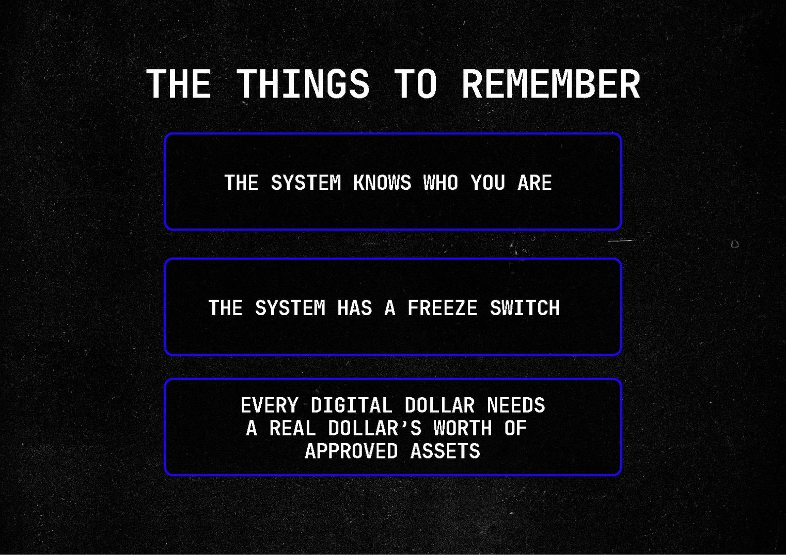
First, the system knows who you are.
These companies have to identify you, keep your records, watch the money, and file reports.
Your name is attached to the account.
What happens inside that account can be tracked.
Second, the system has a freeze switch.
The company has to build in the power to stop the money.
When a lawful order arrives, it can freeze the balance before you can move it.
And third, every digital dollar needs a real dollar’s worth of approved assets behind it.
That is the reserve.
Every month, the CEO and CFO have to certify that the reserve is there.
A false certification carries criminal penalties.
Now stop and ask yourself something.
Why would Congress put a man in prison for twenty years over a bookkeeping form?
Because the reserves are the whole point.
Those reserves do two jobs.
They back the digital dollar in your account.
And they push money into a short list of places approved by Washington.
One of those places is government debt.
Washington’s IOUs.
That is the control panel.
It knows who you are.
It can stop the money.
And it controls what stands behind every digital dollar.
But the control panel is only half of it.
The engine is the half that touches every saver in America.
Garrett went through the documents. I’ll show you what they mean for your dollar. Then he’ll show you the proof.
GARRETT BALDWIN
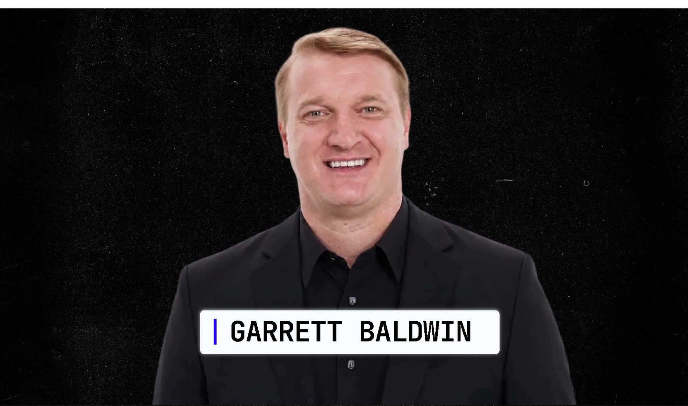
Thank you, Robert. My name is Garrett Baldwin. I run the research desk at Kiyosaki Research. My job on this project was simple.
Find out what the law requires.
Find out what the companies are actually doing.
Then follow the money.
Those are three different things.
I’ll show you the documents. But first, Robert is going to show you how the transaction works. One dollar at a time.
ROBERT KIYOSAKI
Suppose you put one dollar into one of these new digital dollars.
You still see one dollar.
You can spend one dollar.
Nothing looks different to you.
But the company that issued that digital dollar now owes you a dollar back.
So it has to keep one dollar’s worth of approved assets behind that promise.
That is the reserve.
The biggest issuers put most of those reserve dollars into Treasury bills. Remember what a Treasury bill is. An IOU from Washington. So the company takes the money behind your digital dollar and buys Washington’s IOUs.
You did not buy the Treasury bill. The company did. You never decided to lend Washington money. You may never even know it happened.
But your dollar supplied the money behind the purchase.
Multiply that by a million people.
Then ten million.
Then a hundred million.
Millions of ordinary balances become billions of dollars buying Washington’s IOUs.
And the bigger it gets, the more money it can send Washington’s way.
That’s not a conspiracy.
That’s a balance sheet.
GARRETT BALDWIN
That is the plain-English version.
Now here is the proof.
The law gives issuers a short list of assets they can hold behind customer balances.
Cash.
Insured bank deposits.
Short-term Treasury securities.
Government money-market funds.
Those are the reserve assets that matter most for this story.
Now look at what the biggest issuers actually hold.
This is a published reserve report.
Read the largest line.
Short-term United States Treasury bills.
Not a small position.
The overwhelming majority of this issuer’s reserves.
Why?
Treasury bills are easy to buy.
Easy to sell.
And they pay interest.
You still see one digital dollar.
The issuer owns the Treasury bill behind it and collects the interest.
You get the digital dollar. The issuer gets the income.
This is not a theory.
The reserve table is public.
The numbers are updated every month.
And Washington is watching them too.
The Treasury Borrowing Advisory Committee advises the government on how to borrow money.
Its members study who is buying Treasury IOUs and where the next buyers will come from.
Their published minutes discuss these digital-dollar companies as a growing source of demand for government debt.
That is why the Treasury Secretary is talking about tenfold growth.
A tenfold expansion does not just create more digital dollars.
It creates a much larger pool of money available to buy government debt.
ROBERT KIYOSAKI
Now look at the same machine from the other side.
If trillions of dollars move into this system, somebody has to do the work.
None of this runs by itself.
The dollar has to be issued, the reserve has to be held, then trade has to move.
And that record has to be kept.
The old system has to connect to the new one.
Every step needs a company behind it.
And those companies do not work for free.
Most investors will chase the new coins.
I want to own the businesses collecting money from the entire buildout.
You already heard about the first one.
Its new system cleared roughly $8 trillion in July.
But Garrett found two more.
The second sits where the world’s largest government-bond market is beginning to meet digital settlement.
The third may be the strangest of all.
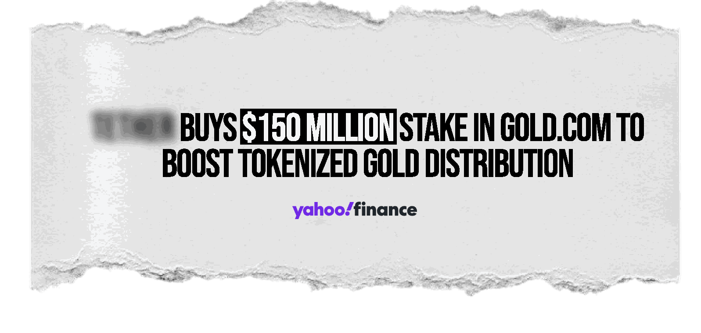
The company behind the world’s biggest digital dollar just put $15O million into this physical-gold business.
Digital dollars on one side.
Physical gold on the other.
And a public company positioned to make money from both.
Three companies.
Three different ways to make money as the system grows.
That is what my rich dad taught me to look for.
Not the shiny new thing everybody is fighting over.
The businesses getting paid behind it.
But you still haven’t seen who gets the biggest benefit.
GARRETT BALDWIN
There is one more piece.
Robert just showed you that the issuer owns the Treasury bills behind the customer’s digital dollars.
Those Treasury bills pay interest.
That interest goes to the issuer.
Not the customer whose dollar created the need for the reserve.
The customer sees one digital dollar.
The issuer sees an interest-paying asset.
Now make the system bigger.
More digital dollars mean more reserves.
More reserves mean more Treasury bills.
More Treasury bills mean more interest for the issuer.
So everybody has a reason to make this system grow.
The issuer collects more interest.
The companies running the machinery collect more fees.
And Washington gets more buyers for its IOUs.
The customer who supplied the dollar does not receive that interest.
ROBERT KIYOSAKI
That’s the part I care about.
Everybody’s dollar is working.
The question is who it’s working for.
My rich dad taught me to own assets that put money in my pocket.
This system does the opposite.
Your dollar sits there.
The company behind it earns the interest.
Washington gets another buyer for its debt.
And you get the same dollar back.
Except now it buys less.
Now let me show you why Washington loves this.
Every time Washington sells an IOU, buyers compete to own it.
The more buyers Washington has, the less interest it has to offer them. More buyers. Lower interest.
That’s good news when you’re borrowing forty trillion dollars.
But it is terrible news when you’re the one trying to save.
Washington pays less.
That pushes down the interest you earn on savings.
And inflation keeps eating the value of every dollar you hold.
Economists have a name for this.
Financial repression.
Here’s the same thing in English.
They don’t take your money.
They just make sure it can’t grow.
And they’ve done it before. In 1933 the government made it illegal for an American to own gold.
Think about what that actually looked like. You worked your whole life. You did what careful people did.
You saved some of your money in gold coins.
Then one morning the President signed an order.
The newspaper told you to bring your gold in.
So you put it in a bag.
You walked it down to the bank.
And you handed it across the counter to a teller you had known for years.
They gave you paper for it.
Nobody kicked your door in.
Nobody had to.
They changed the rule.
Ordinary, law-abiding people did the rest themselves.
It wasn’t a raid.
It was a form.
And then 1971. On a Sunday night in August, the President went on television and told the country the dollar was coming off gold.
Temporarily, he said.
To protect the dollar from speculators.
He used the word temporarily.
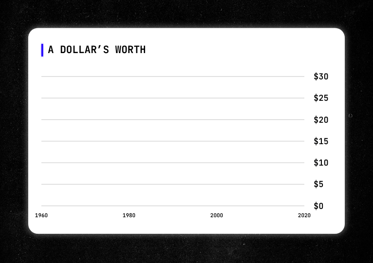
That was fifty-five years ago. Nobody ever turned it back. And look at what happened to the dollar after that.
The house your parents bought.
The groceries.
The car.
The tuition.
Compare what they cost then with what they cost now.
People call that inflation like it’s the weather.
Like it just happens.
It isn’t weather.
It is what happens when people change the rules around money and savers keep holding the paper.
My rich dad watched that broadcast.
He was already a wealthy man.
Years later, I asked him what he remembered.
He said the smartest people in the country spent the whole week arguing about whether it was legal.
Almost nobody asked the better question.
Who’s going to be holding the paper when this is over?
That is the pattern.
The rule changes quietly.
Ordinary people keep doing what worked yesterday.
And years later, they discover what it cost them.
The families who come through it are the ones who own something the system can’t shrink, print, or switch off.
Because this time, the switch is already built in.
Now back to that control panel.
Because a freeze switch sounds theoretical until you see one used.
GARRETT BALDWIN
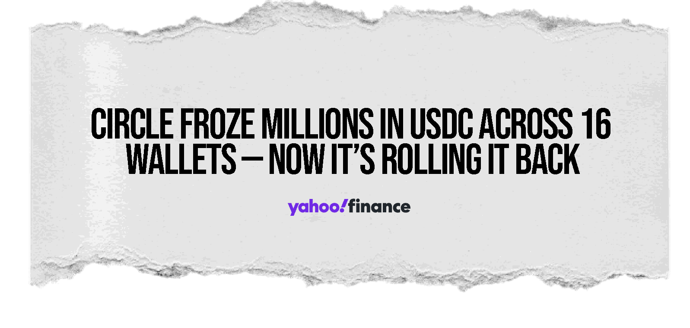
On March 23rd of this year, sixteen accounts were frozen on a major digital-dollar platform.
The order did not come from a regulator.
A private law firm went to court and obtained a sealed civil order.
Within hours, the platform locked all sixteen accounts.
The account holders received no warning.
No phone call.
No time to move the money.
And no explanation when access disappeared.
The story became public only because an independent blockchain analyst found the transactions and documented what happened.
After that, some of the freezes were reversed.
Now look at the platform’s own terms of service.
The power to block or freeze those accounts was written into the agreement from the beginning.
It was never hidden.
It was sitting in the terms nobody reads.
The switch was there all along.
ROBERT KIYOSAKI
Sixteen people woke up that morning with access to their money.
By lunch, they didn’t.
The money was still sitting in the accounts.
But the people who owned it could not touch it.
Nobody called them.
They weren’t given a chance to move it first.
The switch was pulled.
That was enough.
Some got their access back only after an outsider found the transactions and dragged the story into public view.
Think about that.
They did not lose a password.
They did not misplace a wallet.
They lost access because somebody else had the power to turn it off.
That is the difference between holding money and controlling money.
This is no longer a theory.
The switch exists.
It has already been used.
And the new law makes that capability part of the system from the beginning.
So the question is not whether the switch is real.
It is.
The question is how much money will eventually sit behind it.
And how soon.
GARRETT BALDWIN
Three dates govern what happens next. November 3rd. The midterm elections. That election decides who takes office fifteen days before the rules reach their outside deadline. January 3rd. The new Congress takes office. And then January 18th, 2O27.
That is the outside date for the new rules to be in place.
The rules for identifying customers.
The rules for reporting.
The freeze switch.
And the rules governing the reserves behind every digital dollar.
January 18th does not mean every bank, store, and employer changes systems that morning.
It means the rulebook is ready.
Then the race to build on it accelerates.
And that race has already started.
JPMorgan analysts say activity on these systems already runs in the trillions of dollars a year.
That number measures activity.
It does not mean trillions of dollars are sitting there at one time.
One dollar used forty times counts as forty dollars of activity.
So we watch two numbers.
Activity tells us how quickly people are using the system.
The amount sitting inside it tells us how much reserve money the issuers need.
That second number is the one that creates buyers for Washington’s IOUs.
And both numbers are moving up.
The Treasury Secretary expects this market to grow tenfold by the end of the decade.
Not ten percent.
Ten times.
The law is passed.
The rules are coming.
The money is already moving.
And the outside deadline is less than four months away.
ROBERT KIYOSAKI
Fifteen days.
That’s the gap between the new Congress and the day the rules go final.
Whoever wins in November inherits this.
Both parties built it.
The House passed it three hundred and eight to one hundred twenty-two. The Senate, sixty-eight to thirty.
This isn’t left or right.
This is a stampede.
Let me get concrete.
So far, this has been law and money and dates.
Now I want to put it on your kitchen table.
Here is an ordinary Friday a few years from now.
You get paid. Same as always. The payroll company has moved onto the new system because it is faster and cheaper.
Nobody asked you.
Why would they?
It was a back-office decision.
The money lands Friday morning like it always does.
You buy groceries.
The store’s payment company moved onto the same system.
Faster and cheaper.
You pay the mortgage. Same.
Your phone looks exactly the way it looked five years ago.
Same app. Same balance. Same little green number.
Nothing in your life has changed. That is what makes it so easy to miss.
But underneath that screen, everything is different.
Your paycheck moved through the new payment system.
Your grocery payment moved through it.
Your mortgage payment moved through it.
And every dollar entered a system that knows who you are, records what you do, and carries a switch that can stop the money.
You never chose it.
The companies around you chose it for you.
GARRETT BALDWIN
Let me put a boundary around that.
January 18th is the deadline for the rulebook.
It is not the morning every employer, bank, grocery store, and mortgage company changes systems.
Each company makes that decision on its own schedule.
That is why my desk tracks adoption every month.
The law creates the framework.
Then the companies decide what to build inside it.
Every new company that moves adds more activity, more reserves, and more money flowing through the businesses positioned to run this system.
And every time a major company moves, the opportunity set can change with it.
ROBERT KIYOSAKI
Fair. He does that to me constantly.
The law sets the rules.
Then the companies build inside them.
And by the time the change reaches your kitchen table, it already feels normal.
That’s why we watch the adoption, not just the headlines.
Once the people paying you, charging you, and lending to you have moved, ask yourself one question.
How much choice do you really have?
So by now you’re doing what I did.
Looking for the door.
Let’s check all four.
Door one. Use cash.
Cash now makes up only about fourteen percent of the payments Americans make by number.
It still works when you are standing in front of somebody.
But try paying your mortgage with it.
Try buying a plane ticket.
Try getting your paycheck in it.
Cash works beautifully for a life most of us do not live anymore.
Door two.
Move your money overseas.
You can open a foreign account.
Then the foreign bank reports it to Washington.
And you report it again on your own forms.
That’s not an exit.
That’s the same room with extra paperwork.
Door three.
Hold crypto yourself.
This one is real.
If you truly hold the assets yourself, a platform cannot freeze an account you do not have with it.
But most people do not hold their own coins.
They leave them on an exchange or another company’s platform.
That is exactly where those sixteen accounts were sitting in March.
Self-custody can protect you from a platform’s freeze switch.
It does not stop the Debt Machine from growing around you.
Door four.
Refuse to use the new system.
That sounds easy.
Until your employer changes payroll companies.
Until your bank changes its settlement system.
Until your mortgage company, grocery store, and credit-card processor move to the faster, cheaper rail.
Nobody asked Americans to vote when cash quietly became plastic.
The stores changed.
The banks changed.
The employers changed.
Then one day you realized you had not carried a twenty-dollar bill in a month.
That is how a new money system takes over.
Everybody around you chooses it first.
GARRETT BALDWIN
The numbers back Robert up.
Federal Reserve studies put cash at roughly fourteen percent of payments by number.
Foreign banks report American account holders.
And balances left with a company remain subject to that company’s controls.
ROBERT KIYOSAKI
So there is no clean exit that lets you keep living the same life.
Good. Stop looking for one.
My rich dad never taught me to run from the financial system.
He taught me to understand who gets paid by it.
You can’t step outside the system.
But you can change your position inside it.
That takes three moves.
ROBERT KIYOSAKI
Three moves. That’s it.
Move one.
Get something paying you.
Every week, if you can manage it.
Move two.
Own a piece of the machine itself.
Move three.
Stop standing where it’s pointed.
The order matters.
Most people in my business would start with move two, because move two is where the exciting names are.
That’s the part that gets clicked on.
But my rich dad would have started with move one.
Every time.
He used to say the first question isn’t what could this be worth someday.
The first question is what does it pay me while I wait. So we start there.
The whole design of this machine is to put your dollars to work for Washington.
My rich dad would have asked one question about that.
Not an angry one.
He would have asked: Fine. What’s working for you?
Washington has an answer.
Send you a check.
They call it universal basic income.
Borrow the money first, then call the check income.
I have been saying the same thing about that idea for forty years.
A check you didn’t earn, from a government that borrowed to send it, isn’t income.
It’s a leash with a payment schedule.
This C-student’s answer is older.
And better.
Don’t wait for a check.
Buy the things that send checks.
And “income investing” is not only for people who have already made it.
It matters even more when you haven’t.
If you already have money, you can afford to wait ten years for something to work out.
If you don’t, you need the thing to pay you while you hold it.
Because that is what lets you keep holding it.
The people who lose in a system like this one aren’t always the people who picked wrong.
They’re the people who had to sell at the wrong moment because nothing was coming in.
GARRETT BALDWIN
Robert and I built that idea into a model portfolio called the Perpetual Income Plan.
It began on March 31st with ten positions in American energy infrastructure and mineral royalties.
We record every entry price.
We record every distribution when it is declared and when it is paid.
Nothing gets sold quietly.
Nothing gets added after the fact.
When the research changes, readers see the reason in the issue where the decision is made.
It is a model portfolio, not an actual account. No client money is invested under it, and it has a short, unaudited record.
And every distribution depends on the company that declares it.
ROBERT KIYOSAKI
Here’s why I like this.
These aren’t stocks we’re buying just because we think the price might go up someday.
They’re there to produce income while we own them.
That matters.
Because income gives you more control over what you do next.
You’re not sitting there hoping the market bails you out.
You’ve got money coming in while you wait.
That’s why this is move one.
Get something paying you.
My rich dad taught me something when I was nine.
He said, don’t sell the burger. Own the ground under the store.
Because the burger business is hard.
Rent is easy.
Now think about this new financial rail.
Different digital dollars are going to fight for customers.
Some will win.
Some will disappear.
But every one of them still needs the machinery.
Because the money is not only in the digital dollars themselves.
It is in the companies doing the ugly work behind them:
Holding the reserves, keeping the books, checking the transactions, moving the trades, and tying this new system back into the old one.
Those are not volunteer jobs, they are businesses.
And every one of those jobs creates a chance for a company to get paid.
You do not have to guess which digital dollar wins.
Own the companies that get paid no matter which one wins.
That is the opportunity.
GARRETT BALDWIN
We mapped the system layer by layer. We started with the obvious players: the issuers themselves. Then we moved one layer out.
Who holds the reserves?
Which banks are building their own versions?
Which networks move the money?
Which firms keep the records and complete the trades?
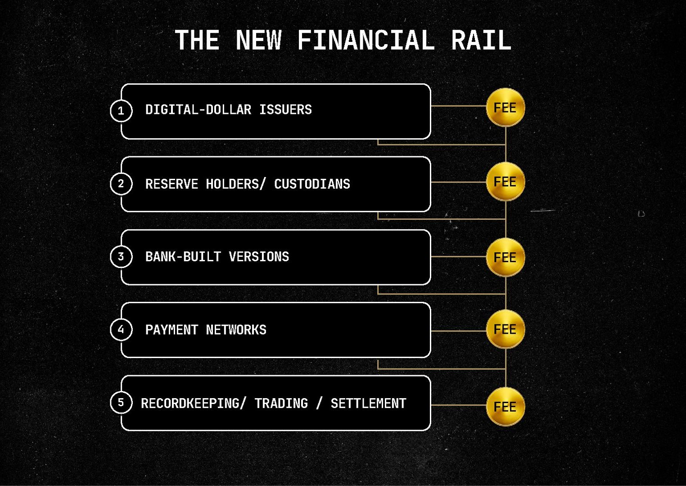
Then we looked for public companies with a role competitors could not easily replace.
Three rose to the top.
The first is already in more than two hundred million investor accounts.
Its new system processed roughly eight trillion dollars in July alone.
The second helps move and record the government IOUs we’ve been talking about.
If more of those IOUs start moving through this new system, a business has to get paid to handle them.
And the third may be the strangest of all.
The company behind the world’s biggest digital dollar just put one hundred fifty million dollars into a physical-gold business.
Digital dollars on one side.
Real gold on the other.
And there’s a public company in the middle of that deal.
Those are the kinds of businesses I want to find early.
Businesses this new system may have to rely on as it grows.
Because when trillions of dollars start moving through a new financial system, that money has to pass through businesses that get paid to make it work.
Those are the businesses I want to own.
ROBERT KIYOSAKI
I’m not giving you the names on camera. This research took months. It is what people pay us for.
And if I read a ticker on a video watched by a hundred thousand people, you lose the chance to examine the work and make your own decision before the crowd reacts.
That helps the people who already own it.
It puts you behind them.
So Garrett put it all in a briefing called Own the Cut.
The names.
The tickers.
Where each company fits.
How it gets paid.
And what would make us change our mind.
That is move two.
Don’t fight over the burger.
Own the ground underneath it.
One more thing belongs with move two. And it is older than all of this.
In the 193Os, people lost everything in banks. The families who came through it owned something outside. Land. Gold. Silver.
Things Washington cannot print more of.
These assets do not send you a check.
That is the trade.
Move one gives you income.
Hard assets give you something outside the paper system.
One pays you.
The other cannot be printed away.
That is why you want both.
Not one.
Third move. The boring one. And for some of you, the most important.
This July, New York City published a list containing nearly a million property records. About thirty-one thousand were flagged for a possible tax.
The list was wrong in places.
Some full-time residents were flagged.
And the burden fell on them.
They had to prove the city wrong by a deadline.
First they make a list of what you own.
Then they decide what you owe.
Remember the people on that New York list.
Their mistake wasn’t owning property.
Their mistake was that nothing stood between their name and the thing they owned.
Families and businesses have used entities, trusts, and careful titling for generations.
They use them for estate planning.
For liability.
For lawful privacy.
All legal.
All boring.
And usually set up years before anyone comes looking.
GARRETT BALDWIN
This is research and education, not legal or tax advice.
No one on this desk is your attorney.
The briefing does not tell you which structure to use.
It shows you what exists and gives you the questions to take to a licensed professional.
So you walk into that meeting knowing what to ask.
ROBERT KIYOSAKI
That is move three.
Stop waiting until your name appears on somebody else’s list.
Move one puts money in your pocket.
Move two gives you ownership of the machinery.
Move three changes where you stand when the system points at what you own.
Income.
Ownership.
Position.
That is how you stop feeding the machine from only one side.
But knowing the three moves today is not enough.
Because the companies will change.
The prices will change.
The rules will change.
And knowing what to buy is only half the decision.
Now I want to say something that most people in my business would tell me to leave out.
Everything I’ve described to you so far, you could write down on one page. The names, the tickers, and the three moves.
One page, and you would have it.
And the page would start getting old the minute we sent it to you.
Because a name is not a strategy.
A ticker is not a strategy.
Knowing what to own is only the beginning.
The real question is what you do when something changes.
And in this system, something is changing every month.
Between issues, the ground can move.
The Treasury can change the rules.
Banks can join faster than expected.
One filing can change the math on a company.
Yesterday’s attractive stock can become too expensive.
An income position can stop earning its place.
Garrett's report shows you where he sees the opportunity today.
The Letter keeps you updated as his research changes.
GARRETT BALDWIN
Here’s how we do the research.
My first question wasn't what people were saying about the law.
It was what the law actually does.
So my desk started with the statute itself.
We separated three things.
What the law requires.
What the companies are actually doing.
And what follows when you put those two facts together.
That is the same process we use every month.
My desk goes back to the primary documents:
The Treasury Department rules, the reserve reports, the adoption announcements, the company filings, and the Perpetual Income Plan itself.
When the research changes, readers see exactly what we are doing about it.
Between now and January 18th, the final rules are being written.
Issuers are publishing new reserve reports.
Banks are making adoption decisions.
And the companies on our map are competing for their place in a market the Treasury Secretary expects to grow tenfold.
Any one of those developments can change which company belongs on the list, what price makes sense, and when it is time to move.
ROBERT KIYOSAKI
That’s the honest reason I want you subscribed instead of just handing you a report.
Owning is good.
Managing is better.
Your complete starting plan comes in four briefings.
The Kiyosaki Letter keeps that plan alive.
A report tells you what to buy.
It can’t tell you when to sell.
And nobody has ever gotten rich off the first half of that sentence.
GARRETT BALDWIN
A report can be right when it is published and still need to be updated later.
Because this is a live market.
Rules change.
Reserve reports change.
Companies report new numbers.
Prices move.
Income positions raise or cut distributions.
And a name that looked attractive at one price can look very different at another.
That is why the Letter matters after the briefings are delivered.
You get the starting map in the briefings.
We keep that map current in the Letter.
Before Robert closes this out, there is one question you should be asking.
Why should you take this seriously? You have seen the law, the reserve reports, and the machinery.
But why listen to Robert about what a change like this means?
I can answer that with dates.
ROBERT KIYOSAKI
My team gave me a list. They wanted me to show you Nvidia. December of 2O18.
Three dollars and fifty-nine cents a share.
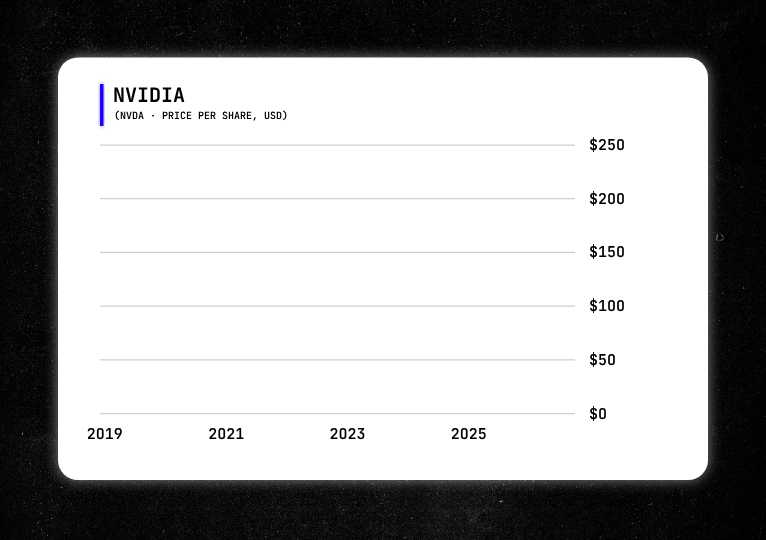
What happened after that would make anybody sit up in his chair.
I told them no.
Because if I open with that, you’ll think this is a stock-picking video. It isn’t. Anybody can show you the best stock he ever bought.
That proves nothing about whether he can read a system before it breaks.
So let me show you three different calls.
Not because they made the biggest numbers.
Because they came from the same method I am showing you today.
Number one. The year was 2OO5. I started telling people that housing and banking were headed straight for a wall. For three years, people called me a crank.
Then in March of 2OO8, a Los Angeles television station said this:
“Real estate expert Robert Kiyosaki predicted all of this would happen back in 2OO5. But most people didn’t listen.”
That same month, on national television, I said I was worried about Lehman Brothers. Six months later, Lehman was gone.
I did not see that because I’m psychic.
I saw how the system was built.
Then I asked one question.
Who is carrying the risk?
That is the same question I asked about this law.
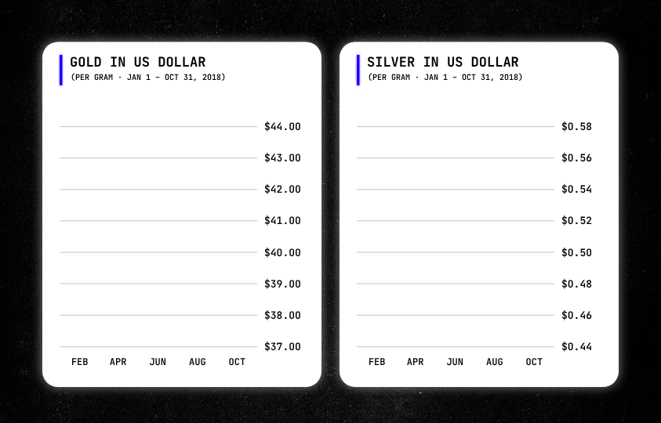
Number two. August of 2O18. I said buy gold and buy silver.
In print.
In a major newspaper.
I had been watching what the dollar was doing ever since Nixon cut it loose from gold in 1971.
By 2O18, I knew where that road was headed.
People thought that was old-man talk.
Gold was boring.
Go pull up a chart of what gold has done since that August.
Then tell me if it was old-man talk.
And number three. The one that matters most today.
In 2OO2, I wrote a book called Rich Dad’s Prophecy.
I warned that retirement accounts had turned Americans’ savings into a captive pool of money.
Locked up.
Penalized if you touched it.
Available for the financial system to use while you waited.
The experts spent twenty years telling me I was wrong.
Then Congress built the same pattern into the new digital-dollar system.
Your money stays in your account.
But the company that issued your digital dollar can use the reserve to buy Washington’s IOUs and collect the interest.
You hold the balance.
Everybody else puts it to work.
GARRETT BALDWIN
Those calls span more than twenty years.
Housing and banking.
Gold and the dollar.
Retirement savings and the new financial rail.
Different markets.
The same method.
Read how the system is built.
Find who controls the money.
Find who carries the risk.
Then act before the crowd understands what changed.
This is not a complete or audited record. Past performance never guarantees future results.
And that's the approach my research desk took when investigating this law.
ROBERT KIYOSAKI
I’ve been wrong plenty.
I’ve been early more than I’ve been wrong.
In this business, that feels about the same for a while.
But I’m not asking you to trust my batting average.
I’m asking you to read the law.
And before I close, I want you to hear from Chris Carroll.
Chris is my publisher.
He’s the guy who has to look me in the eye and ask:
Robert, can we back this up?
Can we show the work?
And has this research actually helped readers?
So I asked him to show you what our readers have told us.
Chris carroll
One more thing before Robert closes this out. You’ve seen how Robert reads a change in the system.
Now I want to show you what readers have said about using the research that comes from it.
I’ve been publishing Robert’s research since 2O18.
Different name on it back then.
Same publication.
Same readers.
Over those years, people have written to tell us what the research did for them.
I want to read you three of those messages exactly as we received them.
That’s the one I keep coming back to.
Not a lottery ticket.
An education.
And momentum where there wasn’t any before.
What I love most is the complete help we get. I currently have a gain of over seven thousand dollars, and I am going to use it to help supplement my retirement.”
Jordan + Kristal | Orlando
Seven thousand dollars.
Not a number on a presentation.
Money they plan to use in retirement.
And Lauren, in Nashville, sent us this:
Since I started investing with Robert’s strategies, my account has grown over one thousand dollars.”
Lauren | Nashville
A thousand dollars.
I kept that one in on purpose.
Because if I were inventing these, I would have invented a bigger number.
These are individual experiences. They are not typical, not average, and not a promise of what you will do. Some readers do well. Some don’t. Investing can result in loss.
But notice what all three people talked about.
Education.
Momentum.
Retirement income.
Real progress in a real account.
That is the goal.
Not one lucky trade.
A better way to understand what is happening, decide what to own, and keep managing it as the world changes.
We show you the work.
Now let me show you exactly what you get.
Alright. Here’s what you get.
Everything you just heard comes from one place. The Kiyosaki Letter. Twelve issues a year. This is not four reports and goodbye.
It's the research service where Garrett tracks the Debt Machine as it grows, with Robert explaining what it means from a Rich Dad perspective.
Every issue gives you four things.
First, updates to the Perpetual Income Plan.
Ten energy and mineral positions built to put money in your pocket.
Every distribution recorded.
Every change explained.
Second, Garrett’s research.
The new rules, the companies building the system, and the opportunities moving to the top of his list.
Third, Robert’s column.
The biggest change in money in a generation, explained in the same plain English you heard today.
And fourth, the verification file.
- The laws.
- The filings.
- The reserve reports.
- The documents behind the claims.
You never have to take our word for it.
Then four briefings. Yours immediately, whichever path you choose.
First, The Debt Machine.
The six parts of the law in plain English.
You’ll see the full control panel, the reserve engine, and exactly how ordinary dollars become buying power for Washington’s IOUs.
Second, The Perpetual Income Plan.
The complete portfolio.
Every position.Why it’s there.What it’s paying.And what would make Garrett change his mind.
Third, Own the Cut.
The names and tickers of the thre e companies Garrett identified as best positioned to collect money from this buildout.
You’ll see where each company sits, why its role matters, and what would knock it off the list.
Fourth, The Ownership Briefing.
This shows you how families and businesses have legally separated their name from what they own for generations, using entities, trusts, and careful titling.
And the questions to take to your own attorney before your name appears on somebody else’s list.
Those four briefings give you the complete starting plan.
The Kiyosaki Letter keeps the plan alive.
Two ways in. Three months, fifty-nine dollars. Or a full year, one hundred ninety-nine.
Now let me do some arithmetic with you, because this part surprises people.
The trial is fifty-nine for three months. Then it renews at ninety-nine a quarter.
So take the trial, stay a year, and you’ll have paid three hundred and fifty-six dollars.
The annual is one hundred ninety-nine.
Same twelve months of the Letter. Same four briefings.
But the annual costs more than one hundred fifty dollars less.
The trial is the more expensive way to stay. It’s only the cheaper way to leave.
And there are two things the trial doesn’t get at all.
The first is a live call. Four times a year, Garrett does a live call for an hour.
He covers what changed in the rules, what changed in the portfolio, what his research desk is watching, and then he takes questions.
The questions are submitted ahead of time so he can do the work before he answers.
These are general questions about research we’ve published. Not personal investment advice.
Annual members get access to every call we’ve already recorded, plus a seat on the next live one where a question of yours can be in the queue.
The second is a separate quarterly review of the Perpetual Income Plan.
A full written update on the portfolio every quarter. Every position, what changed, where the value sits now, and what the desk is watching.
Annual members only.
One more thing, and it isn’t a bonus. When something on that calendar moves, Garrett writes up what it means. Not a recap, a recalculation.
Members get that because members get everything the desk writes.
That’s the whole reason you’d subscribe instead of buying a report.
And there is one more advantage to taking the full year.
Three months gives you a look at the Perpetual Income Plan.
A year lets you see the whole cycle. The payments, the changes, the positions Garrett adds, and the ones he tells readers to leave behind.
That is the point of the annual membership.
You stay with the research long enough to see what actually happens as the rules go into effect and the system develops.
And Robert will also send annual members a hardcover copy of FAKE.
Shipped to your door.
Take the three months and you’re trying us out. That’s fair.
But take the year and you’re a member…
You stay with Garrett and the research for all twelve months, including the first full cycle after the rules are in place.
And one thing people get backwards is that the year is not the bigger risk. The three-month path comes with a thirty-day guarantee. The annual path gives you sixty days.
Read the briefings and the issues.
Look through the research.
If it is not what we promised, send us one email.
We will return every dollar.
And you keep everything we sent you.
The briefings.
The issues.
And if you took the annual path, the book is yours too.
YES - I’M IN. CLAIM MY SPOT NOW
So you are not taking more risk by choosing the year.
You get the full year, the calls, and the quarterly Perpetual Income Plan reviews for less than it would cost to stay on the quarterly plan for a year.
If the work does not earn its place, we do not want your money.
Choose the path that fits you below. Fifty-nine dollars covers your first three months.
After that, it renews at ninety-nine dollars a quarter unless you cancel.
On the annual path, one hundred ninety-nine dollars covers your first twelve months.
Unless you cancel, which you can do any time by email or phone, it renews at the then-current annual rate, and we email you beforehand.
Before you decide, let me answer what people actually ask.
Am I being told to buy a stock?
No.
You are buying research.
Garrett gives you the names, the tickers, the reasoning, the risks, and the documents behind the work.
What you do with that research is up to you.
Nobody here is your personal investment adviser.
We do not know your account, your risk tolerance, or your financial situation.
That is why the briefings show the work.
You should be able to read the case, understand the risks, and make your own decision.
Is The Ownership Briefing personal legal advice?
No.
It is research and education.
The briefing shows you the kinds of ownership tools families and businesses have used for years, including entities, trusts, and titling choices.
But it does not tell you what to set up.
That depends on your facts, and it belongs in a conversation with your own attorney or tax professional.
The goal is simple.
Walk into that meeting knowing what to ask.
What if I’m too late?
You aren’t. The framework reaches its outside full-enforcement date on January 18th.
Banks are still choosing what to build.
Companies are still fighting for their position.
Most investors still have no idea this opportunity exists.
This is the window.
What if I don’t know anything about this stuff?
Then start with The Debt Machine.
Robert explains the borrower, the IOU, the reserve, and the buyer.
Garrett shows you the documents.
You do not need a finance degree.
You need a place to start.
Why should I pay for this when there’s free information everywhere?
Because most free coverage starts with somebody else’s summary.
Garrett starts with the law, the reserve reports, and the company filings.
Then his desk checks them again every month.
That is the work you are paying for.
What if I don’t have much to protect?
What if I don’t have much to protect?
Then this matters more, not less.
Wealthy families already have people watching changes like this.
Most people have nobody.
That’s who we write for.
So that’s the offer.
Fifty-nine dollars if you want three months to judge the work.
One hundred ninety-nine dollars if you want the full year, the FAKE hardcover, four live calls with Garrett, quarterly Perpetual Income Plan reviews, and the first reporting cycle after the rules are in place.
Either way, you get time to read it and check the work for yourself.
If it is not what we promised, one email gets your money back.
So now the question is not what you get.
It is what happens if you wait.
ROBERT KIYOSAKI
Let me tell you what happens if you understand all of this and still decide to wait. Nothing dramatic.
No crash.
No sirens.
In January the framework reaches its outside full-enforcement date. Most people will not notice a thing.
Their bank app will look the same.
Their paycheck will land on Friday.
And underneath all of it, their money will quietly start doing a job they never agreed to do.
Five years from now, there are going to be two kinds of people sitting at the kitchen table. The first kind waited.
They waited for television to explain it.
They waited for somebody official to tell them what the rules meant.
And when their savings never caught up to the cost of everything, they called it bad luck.
Or the economy.
Or whoever happened to be president that year.
What they never blamed was the forty-eight-page law that passed while they were looking somewhere else.
The second kind did something smaller.
And smarter.
The second kind was different.
Not because they knew the future.
Because they stopped waiting for somebody else to explain it.
They read the documents, asked better questions, and looked at the three moves while the crowd was still staring at the headlines.
Agree with me or don’t.
That was never the point.
The point is they could see what was happening.
That is the whole difference.
Not panic.
Positioning.
Waiting is not neutral.
Every month you wait, the rules get closer, the money moves farther, and the opportunity becomes more obvious to everybody else.
The buttons are below. Three months gets you in.
A full year keeps you with Garrett through the first reporting cycle, includes the quarterly calls and Perpetual Income Plan updates, and we’ll send you the FAKE hardcover.
Read the briefings.
Check the work.
See what Garrett found.
I’ve spent forty years learning one thing, and I’ll give it to you for free.
The game doesn’t get less rigged because you refuse to look at it.
Read the law. Read the verification file. Then decide where you want to stand.
Just do it before the machine makes the choice for you.
YES - I’M IN. CLAIM MY SPOT NOW